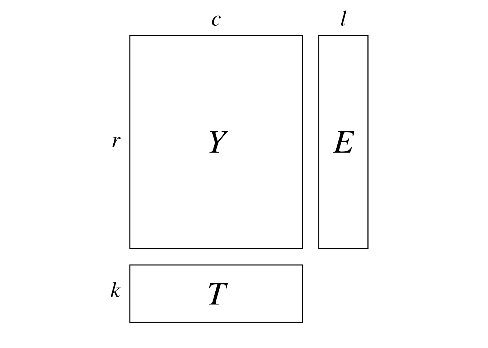
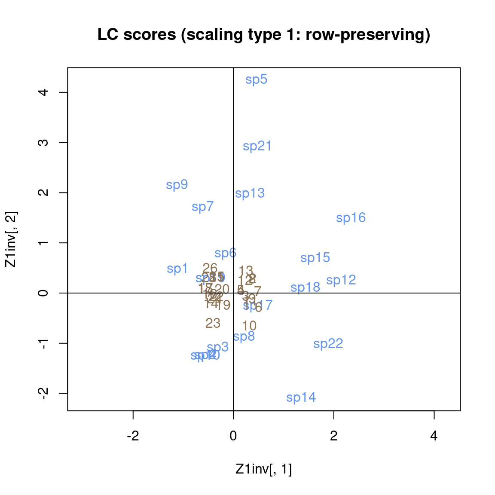
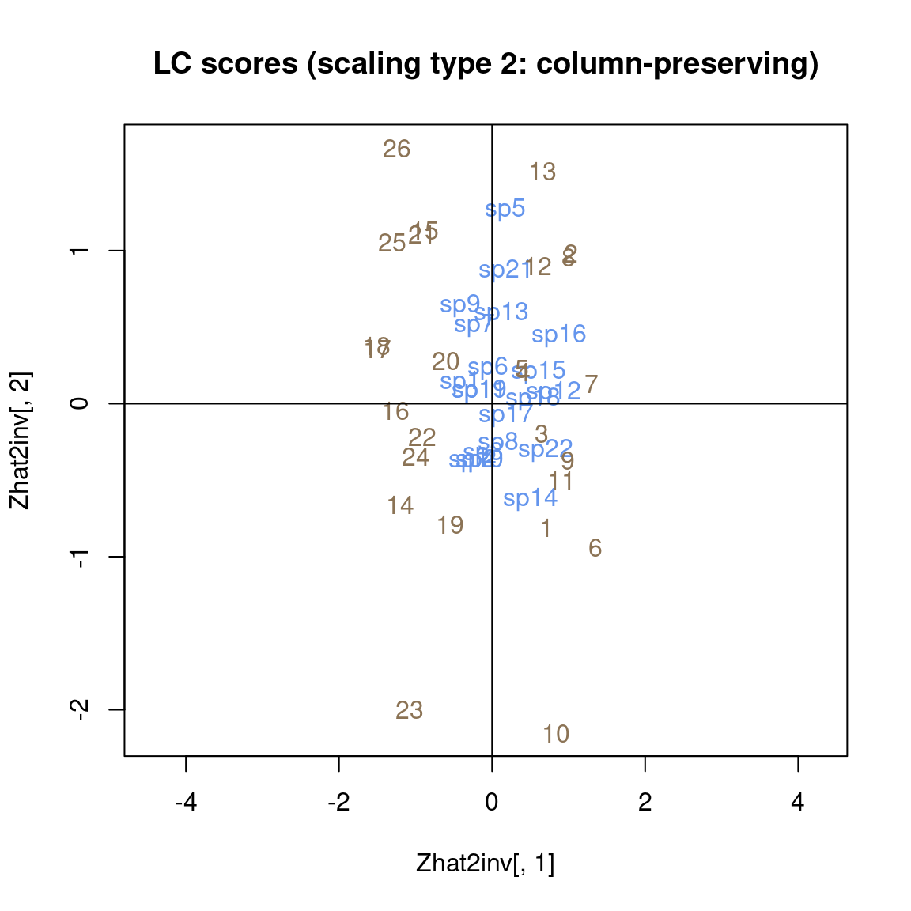
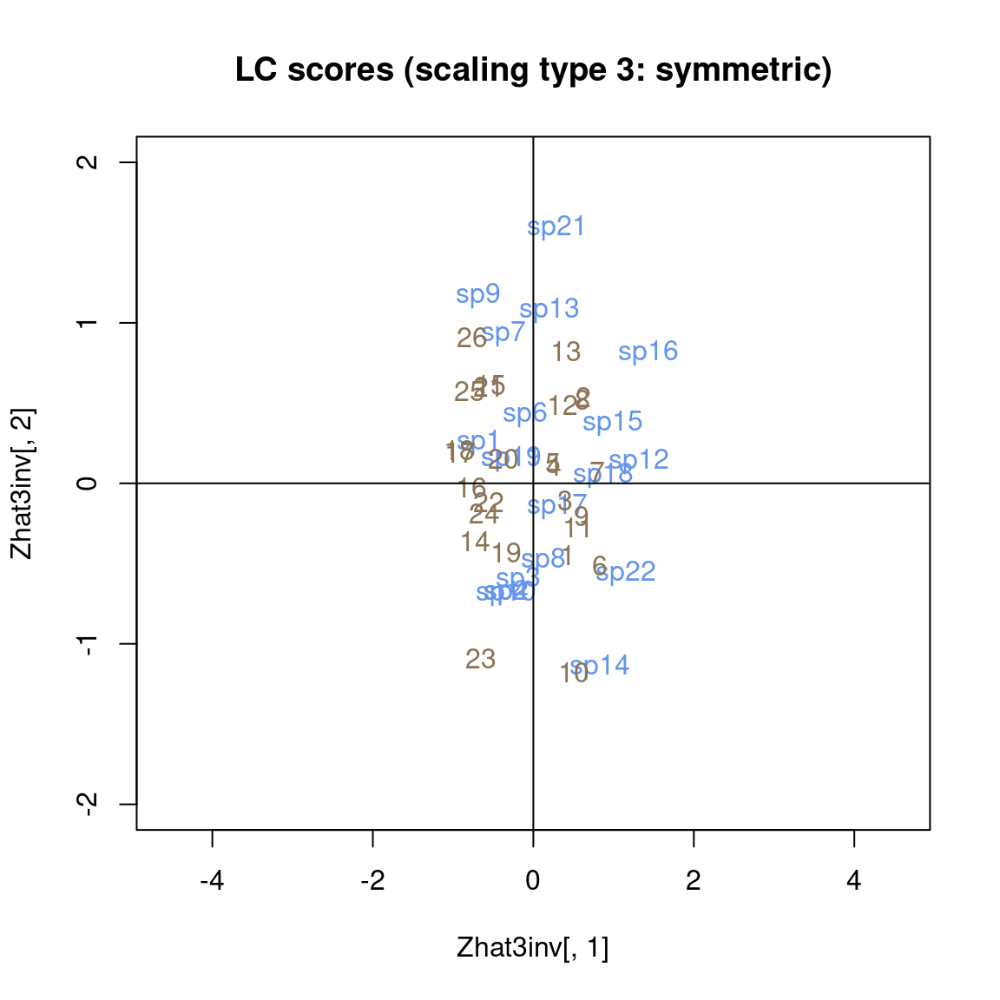
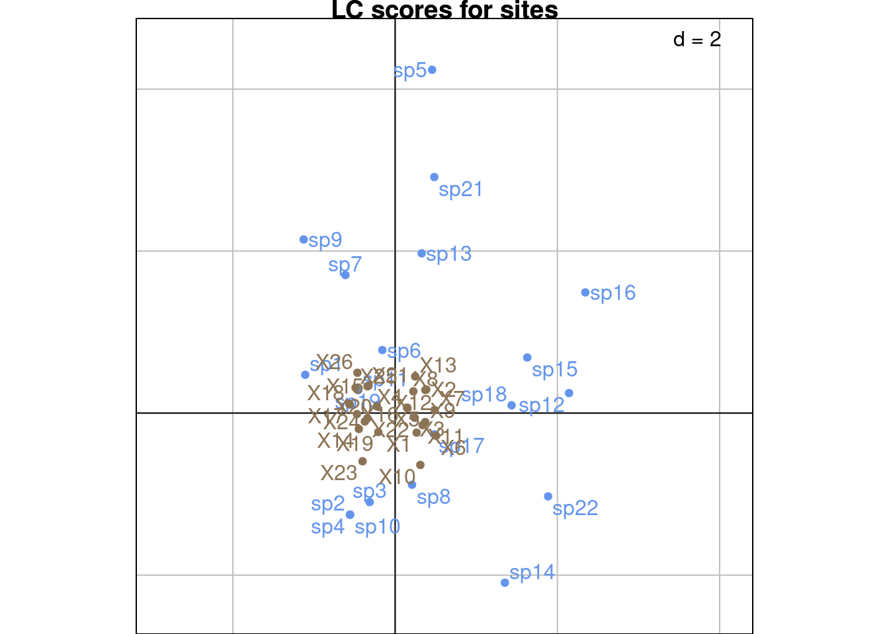

Code
# Paths
library(here)
# Multivariate analysis
library(ade4)
library(adegraphics)
# dc-CA
source(here("functions/dpcaiv2-ade4.R"))
# Matrix algebra
library(expm)
# Plots
library(ggplot2)
source(here("functions/plot.R"))The contents of this page relies heavily on (Braak, Šmilauer, and Dray 2018).
dc-CA was developed as a natural extension of CCA and has been used to study the relationship between species traits and environmental variables.
In dc-CA, we have 3 matrices:

The aim of dc-CA is to find a linear combination of the predictor variables in \(E\) and \(T\) (environmental variables and traits) that maximizes the correlation.
Below are these matrices for our data:
\(Y =\)
| sp1 | sp2 | sp3 | sp4 | sp5 | sp6 | sp7 | sp8 | sp9 | sp10 | sp11 | sp12 | sp13 | sp14 | sp15 | sp16 | sp17 | sp18 | sp19 | sp21 | sp22 |
|---|---|---|---|---|---|---|---|---|---|---|---|---|---|---|---|---|---|---|---|---|
| 1 | 0 | 1 | 1 | 0 | 1 | 0 | 2 | 0 | 1 | 1 | 0 | 0 | 0 | 0 | 0 | 0 | 0 | 1 | 0 | 0 |
| 2 | 0 | 0 | 2 | 0 | 1 | 0 | 5 | 0 | 2 | 0 | 2 | 4 | 0 | 3 | 3 | 0 | 3 | 1 | 0 | 2 |
| 5 | 0 | 0 | 2 | 0 | 1 | 0 | 2 | 0 | 1 | 2 | 0 | 0 | 0 | 0 | 0 | 0 | 3 | 2 | 0 | 1 |
| 3 | 0 | 0 | 0 | 0 | 1 | 0 | 4 | 1 | 0 | 1 | 0 | 0 | 0 | 0 | 0 | 0 | 2 | 0 | 0 | 1 |
| 5 | 0 | 0 | 1 | 0 | 1 | 0 | 2 | 0 | 0 | 3 | 0 | 0 | 0 | 0 | 1 | 0 | 3 | 1 | 0 | 1 |
| 1 | 0 | 0 | 1 | 0 | 2 | 0 | 3 | 1 | 2 | 1 | 0 | 0 | 0 | 1 | 0 | 1 | 2 | 2 | 0 | 3 |
| 4 | 0 | 0 | 0 | 0 | 2 | 0 | 4 | 0 | 2 | 0 | 4 | 0 | 0 | 0 | 0 | 1 | 5 | 0 | 0 | 2 |
| 2 | 0 | 0 | 1 | 0 | 2 | 0 | 0 | 0 | 0 | 1 | 1 | 0 | 0 | 0 | 0 | 0 | 5 | 1 | 5 | 1 |
| 4 | 0 | 0 | 0 | 0 | 0 | 0 | 2 | 0 | 0 | 3 | 0 | 0 | 0 | 0 | 0 | 1 | 1 | 0 | 0 | 1 |
| 2 | 0 | 1 | 5 | 0 | 0 | 0 | 5 | 0 | 1 | 1 | 4 | 0 | 0 | 0 | 1 | 2 | 2 | 0 | 0 | 2 |
| 2 | 0 | 0 | 2 | 0 | 1 | 0 | 5 | 0 | 2 | 2 | 0 | 0 | 0 | 4 | 0 | 1 | 10 | 3 | 0 | 1 |
| 4 | 0 | 0 | 0 | 0 | 1 | 0 | 4 | 0 | 2 | 2 | 4 | 0 | 0 | 0 | 0 | 2 | 1 | 2 | 0 | 1 |
| 5 | 5 | 0 | 0 | 1 | 1 | 0 | 1 | 0 | 3 | 0 | 5 | 0 | 0 | 0 | 0 | 0 | 0 | 1 | 5 | 1 |
| 4 | 0 | 0 | 1 | 0 | 2 | 0 | 0 | 0 | 1 | 2 | 0 | 0 | 0 | 0 | 0 | 0 | 0 | 2 | 0 | 0 |
| 3 | 0 | 0 | 0 | 1 | 0 | 0 | 0 | 0 | 3 | 0 | 1 | 0 | 0 | 0 | 0 | 0 | 0 | 0 | 0 | 0 |
| 3 | 0 | 0 | 0 | 0 | 5 | 0 | 4 | 0 | 1 | 2 | 0 | 0 | 0 | 0 | 0 | 0 | 1 | 2 | 0 | 0 |
| 4 | 0 | 1 | 1 | 0 | 1 | 0 | 3 | 1 | 2 | 0 | 0 | 0 | 0 | 0 | 0 | 0 | 2 | 0 | 0 | 0 |
| 5 | 0 | 0 | 1 | 0 | 1 | 0 | 3 | 2 | 1 | 2 | 0 | 0 | 0 | 0 | 0 | 0 | 1 | 3 | 0 | 0 |
| 4 | 2 | 0 | 1 | 0 | 0 | 0 | 2 | 0 | 2 | 2 | 0 | 0 | 1 | 0 | 0 | 0 | 1 | 1 | 0 | 0 |
| 4 | 0 | 0 | 1 | 0 | 2 | 0 | 2 | 2 | 2 | 1 | 1 | 0 | 0 | 0 | 0 | 0 | 2 | 0 | 0 | 0 |
| 5 | 0 | 0 | 1 | 0 | 4 | 0 | 0 | 0 | 0 | 4 | 0 | 0 | 0 | 0 | 0 | 0 | 0 | 2 | 0 | 0 |
| 5 | 1 | 0 | 3 | 0 | 2 | 0 | 2 | 1 | 0 | 2 | 0 | 0 | 0 | 0 | 0 | 0 | 3 | 1 | 0 | 0 |
| 3 | 5 | 0 | 4 | 0 | 2 | 0 | 5 | 0 | 4 | 2 | 0 | 0 | 1 | 0 | 0 | 0 | 2 | 0 | 0 | 0 |
| 5 | 2 | 0 | 7 | 0 | 1 | 1 | 0 | 0 | 4 | 2 | 0 | 0 | 0 | 0 | 0 | 0 | 0 | 2 | 0 | 0 |
| 6 | 0 | 0 | 2 | 0 | 1 | 0 | 0 | 0 | 1 | 3 | 0 | 0 | 0 | 0 | 0 | 0 | 0 | 3 | 3 | 0 |
| 3 | 0 | 0 | 0 | 0 | 1 | 0 | 0 | 0 | 0 | 1 | 0 | 0 | 0 | 0 | 0 | 0 | 0 | 1 | 1 | 0 |
\(E =\)
| location | elevation | patch_area | perc_forests | perc_grasslands | ShannonLandscapeDiv |
|---|---|---|---|---|---|
| 0 | 10 | 6.28 | 7.7882 | 67.7785 | 0.232 |
| 0 | 30 | 7.92 | 16.4129 | 43.4066 | 0.274 |
| 0 | 430 | 83.24 | 24.4526 | 28.4995 | 0.274 |
| 0 | 420 | 140.83 | 41.9966 | 34.2412 | 0.260 |
| 0 | 400 | 140.83 | 41.9966 | 34.2412 | 0.260 |
| 0 | 500 | 0.50 | 7.5445 | 67.0780 | 0.240 |
| 0 | 470 | 7.84 | 19.3087 | 56.4031 | 0.253 |
| 0 | 110 | 21.15 | 23.4668 | 49.8908 | 0.262 |
| 0 | 460 | 24.82 | 21.3932 | 57.0430 | 0.243 |
| 0 | 450 | 3.11 | 4.8285 | 73.7518 | 0.216 |
| 0 | 40 | 6.66 | 7.4729 | 66.0061 | 0.240 |
| 0 | 160 | 5.63 | 32.3516 | 45.0477 | 0.253 |
| 0 | 160 | 10.99 | 29.7139 | 18.8270 | 0.291 |
| 1 | 10 | 6.28 | 7.7882 | 67.7785 | 0.232 |
| 1 | 30 | 7.92 | 16.4129 | 43.4066 | 0.274 |
| 1 | 430 | 83.24 | 24.4526 | 28.4995 | 0.274 |
| 1 | 420 | 140.83 | 41.9966 | 34.2412 | 0.260 |
| 1 | 400 | 140.83 | 41.9966 | 34.2412 | 0.260 |
| 1 | 500 | 0.50 | 7.5445 | 67.0780 | 0.240 |
| 1 | 470 | 7.84 | 19.3087 | 56.4031 | 0.253 |
| 1 | 110 | 21.15 | 23.4668 | 49.8908 | 0.262 |
| 1 | 460 | 24.82 | 21.3932 | 57.0430 | 0.243 |
| 1 | 450 | 3.11 | 4.8285 | 73.7518 | 0.216 |
| 1 | 40 | 6.66 | 7.4729 | 66.0061 | 0.240 |
| 1 | 160 | 5.63 | 32.3516 | 45.0477 | 0.253 |
| 1 | 160 | 10.99 | 29.7139 | 18.8270 | 0.291 |
\(T =\)
| biog | forag | mass | diet | move | nest | eggs | |
|---|---|---|---|---|---|---|---|
| sp1 | 1 | 2 | 2 | 3 | 1 | 2 | 2 |
| sp2 | 1 | 1 | 1 | 2 | 1 | 2 | 2 |
| sp3 | 1 | 1 | 2 | 2 | 2 | 2 | 1 |
| sp4 | 1 | 1 | 1 | 2 | 1 | 2 | 2 |
| sp5 | 1 | 3 | 3 | 1 | 2 | 3 | 4 |
| sp6 | 1 | 1 | 4 | 3 | 2 | 2 | 1 |
| sp7 | 1 | 1 | 1 | 2 | 1 | 3 | 3 |
| sp8 | 1 | 1 | 1 | 2 | 2 | 2 | 2 |
| sp9 | 1 | 2 | 1 | 2 | 1 | 3 | 3 |
| sp10 | 1 | 1 | 1 | 2 | 1 | 2 | 2 |
| sp11 | 2 | 4 | 3 | 2 | 1 | 2 | 2 |
| sp12 | 2 | 1 | 2 | 3 | 2 | 2 | 3 |
| sp13 | 2 | 1 | 4 | 3 | 2 | 3 | 1 |
| sp14 | 2 | 3 | 2 | 2 | 1 | 1 | 3 |
| sp15 | 2 | 2 | 2 | 3 | 2 | 2 | 3 |
| sp16 | 2 | 2 | 2 | 3 | 2 | 2 | 4 |
| sp17 | 2 | 3 | 4 | 1 | 1 | 2 | 2 |
| sp18 | 2 | 2 | 1 | 3 | 2 | 2 | 3 |
| sp19 | 2 | 4 | 3 | 2 | 1 | 2 | 2 |
| sp21 | 2 | 4 | 3 | 1 | 2 | 3 | 3 |
| sp22 | 2 | 3 | 2 | 3 | 2 | 1 | 3 |
dc-CA must not have to many traits compared to species: that is a disadvantage compared to RLQ, but on the other hand dc-CA allows to see relationships that RLQ would miss (Braak, Šmilauer, and Dray 2018).
There are several ways to perform dc-CA (Braak, Šmilauer, and Dray 2018), notably:
We perform the SVD of \(D = [E_{center}' D(y_{i \cdot}) E_{center}]^{-1/2} E_{center}' Y T_{center} [T_{center}' D(y_{\cdot j}) T_{center}]^{-1/2}\)
\[ D = P \Lambda_{SDV} Q' \] This allows us to find the eigenvectors \(P\) (rows or environment eigenvectors) and \(Q\) (columns or traits eigenvectors).
The eigenvalues of the dc-CA are the squared eigenvalues of the SVD: \(\Lambda_{dc-CA} = \Lambda_{SVD}^2\)
There are \(\min(k, l)\) non-null eigenvalues???
Then, the regression coefficients for explanatory variables can be found with
The rows/column scores are detailed below in the Scalings section.
First, we need to center the traits and environment matrices (resp. \(T_{cent}\) and \(E_{cent}\)). To do that, we have to compute “inflated” versions of these matrices matching the occurrence counts in \(Y\).
\[ E_{stand} = E - \bar{E}_{infl} =\left[e_i \sum_i y_{i\cdot}e_i/y_{\cdot\cdot} \right] \]
\[ T_{stand} = T - \bar{T}_{infl} = \left[t_j \sum_j y_{\cdot j}t_j/y_{\cdot\cdot} \right] \]
With our data:
# Center E -----
yi_ <- rowSums(Y)
Ecenter <- matrix(nrow = nrow(E), ncol = ncol(E))
for(i in 1:ncol(Ecenter)) {
Ecenter[, i] <- E[, i] - sum(E[, i]*yi_)/sum(Y)
}
# This is the same as computing a mean on inflated data matrix Einfl and centering E with these means
# Center T -----
y_j <- colSums(Y)
Tcenter <- matrix(nrow = nrow(T_), ncol = ncol(T_))
rownames(Tcenter) <- rownames(T_)
colnames(Tcenter) <- colnames(T_)
for(j in 1:ncol(Tcenter)) {
Tcenter[, j] <- T_[, j] - (sum(T_[, j]*y_j)/sum(Y))
}# Check centering -----
M1 <- matrix(rep(1, nrow(Y)), nrow = 1)
all((M1 %*% diag(rowSums(Y)) %*% Ecenter) < 10e-10)[1] TRUE[1] TRUEMaximizing the fourth-corner correlation means finding \(\hat{u}\) and \(u\) that maximize \(\hat{u}'Yu\) (where \(\hat{u}\) are the sites (rows) scores and \(u\) are the species (columns) scores).
\(\hat{u}\) and \(u\) are linear combinations of traits and environmental variables: \(\hat{u} = E_{center}b\) and \(u = T_{center}c\).
So in the end, we need to maximize \(\hat{u}'Yu\) with respect to the coefficients vectors \(b\) and \(c\):
\[ \max_{b, c}(\hat{u}'Yu) = \max_{b, c}\left(\left[E_{center}b\right]'Y T_{center}c \right) \]
These equations are written for the first axis, but we can also write them in matrix form:
\[ \max_{B, C}(\hat{U}'YU) = \max_{B, C}\left(\left[E_{center}B\right]'Y T_{center}C \right) \]
In addition, we introduce the following constraint on the norm of the columns vectors of \(\hat{U}\) and \(U\): \(\hat{u}' D(y_{i\cdot}) \hat{u} = 1\) and \(u' D(y_{\cdot j})u = 1\). In fact, tjese constraints will be relaxed later depending on the scaling (see below).
To find the coefficients \(B\) and \(C\) defined above, we need to diagonalize the following matrices \(M\) and \(M_2\):
To find \(B\), we must diagonalize \(M\): \[ M = \left[E_{center}' D(y_{i\cdot}) E_{center} \right]^{-1} E_{center}'YT_{center} \left[T_{center}' D(y_{\cdot j}) T_{center} \right]^{-1} T_{center}' Y' E_{center} \] Where matrices \(D(y_{i \cdot})\) and \(D(y_{\cdot j})\) are the diagonal matrices with the column and row sums (respectively). They are analogous to matrices \(D(p_{i \cdot})\) and \(D(p_{\cdot j})\) defined for CA and CCA (but we use \(Y\) instead of \(P\) to define the margins). We can view \(M\) as: \[ M = \hat{E}_{center} \hat{T}_{center} = \beta T_{center} \gamma E_{center} \] With \(\beta = \left[E_{center}' D(y_{i\cdot}) E_{center} \right]^{-1} E_{center}'Y\) and \(\gamma = \left[T_{center}' D(y_{\cdot j}) T_{center} \right]^{-1} T_{center}' Y'\). Here, we predict the environment with traits so that \(\hat{E}_{center} = \beta T_{center}\) and the traits with the environment so that \(\hat{T}_{center} = \gamma E_{center}\). So we maximize the correlation between \(\hat{E}_{center}\) and \(\hat{T}_{center}\).
Similarly, to find \(C\), we must diagonalize \(M_2\):
\[ M_2 = \left[T_{center}' D(y_{\cdot j}) T_{center} \right]^{-1} T_{center}' Y' E_{center} \left[E_{center}' D(y_{i\cdot}) E_{center} \right]^{-1} E_{center}'YT_{center} \] Here, we can view \(M_2\) as: \[$M_2 = \hat{T}_{center} \hat{E}_{center} = \gamma E_{center} \beta T_{center}\]
The eigenvectors matrices of these diagonalizations give us \(B\) and \(C\):
\[ M = B \Lambda_b B^{-1} ~~ \text{and} ~~ M_2 = C \Lambda_c C^{-1} \]
We can either diagonalize \(M\) and \(M_2\) of perform a single SVD of a matrix \(D\) defined below and get a similar result. Both methods are presented below.
We diagonalize \(M\) and \(M_2\):
# Define weights
Dyi_ <- diag(rowSums(Y))
Dy_j <- diag(colSums(Y))
# Compute M
M <- solve(t(Ecenter) %*% Dyi_ %*% Ecenter) %*% t(Ecenter) %*% Y %*% Tcenter %*% solve(t(Tcenter) %*% Dy_j %*% Tcenter) %*% t(Tcenter) %*% t(Y) %*% Ecenter
# Compute M2
M2 <- solve(t(Tcenter) %*% Dy_j %*% Tcenter) %*% t(Tcenter) %*% t(Y) %*% Ecenter %*% solve(t(Ecenter) %*% Dyi_ %*% Ecenter) %*% t(Ecenter) %*% Y %*% Tcenter [1] 0.139487442 0.088736680 0.049183623 0.013797529 0.008736645 0.002485683vB <- eigB$vectors
# Diagonalize M2
eigC <- eigen(M2)
lambdaC <- eigC$values
lambdaC # six non-null eigenvalues[1] 1.394874e-01 8.873668e-02 4.918362e-02 1.379753e-02 8.736645e-03
[6] 2.485683e-03 -9.364154e-18[1] TRUE### SVD
Alternatively, we can compute the SVD of a matrix \(D\) computed from \(M\) and get a similar result. \(D\) is defined as:
\[ D = M^{1/2} = [E_{center}' D(y_{i \cdot}) E_{center}]^{-1/2} E_{center}' Y T_{center} [T_{center}' D(y_{\cdot j}) T_{center}]^{-1/2} \]
With our dataset:
We perform the SVD of \(D\): \(D = P \Lambda_{SVD} Q'\).
sv <- svd(D)
lambda_svd <- sv$d
Lambda_svd <- diag(lambda_svd)
P_svd <- sv$u
Q_svd <- sv$v
dim(P_svd)[1] 6 6[1] 7 6The eigenvalues of the SVD are the square roots of the final eigenvalues obtained by diagonalization: \(\Lambda_{dc-CA} = \Lambda_{SVD}^2\)
Now, we can compute the regression coefficients of the sites environmental variables (\(B\)) as:
\[ B = [E_{center}'D(y_{i\cdot})E_{center}]^{-1/2}P \Lambda_{SVD} \]
Same for the coefficients of species traits \(C\):
\[ C = [T_{center}' D(y_{\cdot j})T_{center}]^{-1/2}Q\Lambda_{SVD} \]
[,1] [,2] [,3] [,4] [,5] [,6]
[1,] -0.5259939 0.7780306 0.8097335 0.3580791 0.3630149 -0.1983442
[2,] -0.5259939 0.7780306 0.8097335 0.3580791 0.3630149 -0.1983442
[3,] -0.5259939 0.7780306 0.8097335 0.3580791 0.3630149 -0.1983442
[4,] -0.5259939 0.7780306 0.8097335 0.3580791 0.3630149 -0.1983442
[5,] -0.5259939 0.7780306 0.8097335 0.3580791 0.3630149 -0.1983442
[6,] -0.5259939 0.7780306 0.8097335 0.3580791 0.3630149 -0.1983442[1] 0.5259939 0.7780306 0.8097335 0.3580791 0.3630149 0.1983442[1] 1 1 1 1 1 1 [,1] [,2] [,3] [,4] [,5] [,6]
[1,] 0.03204444 -0.03641707 0.03393986 -0.02556497 -0.007219091 0.006079451
[2,] 0.03204444 -0.03641707 0.03393986 -0.02556497 -0.007219091 0.006079451
[3,] 0.03204444 -0.03641707 0.03393986 -0.02556497 -0.007219091 0.006079451
[4,] 0.03204444 -0.03641707 0.03393986 -0.02556497 -0.007219091 0.006079451
[5,] 0.03204444 -0.03641707 0.03393986 -0.02556497 -0.007219091 0.006079451
[6,] 0.03204444 -0.03641707 0.03393986 -0.02556497 -0.007219091 0.006079451
[7,] 0.03204444 -0.03641707 0.03393986 -0.02556497 -0.007219091 0.006079451[1] 0.032044439 0.036417073 0.033939863 0.025564966 0.007219091 0.006079451[1] 1 1 1 1 1 1 1There are two types of coordinates: linear combination scores (LC scores) and weighted averages scores (WA scores).
LC scores are computed from the regression coefficients and the predictor variable table associated with the same dimension.
Note: these results are in disagreement with the article of (Braak, Šmilauer, and Dray 2018), since the scalings of the columns should be times \(\Lambda^{-1}\), and there is a problem with the variance of $co. We find that there should be \(\Lambda^{1-\alpha}\) in (17) instead of \(\Lambda^{\alpha-1}\).
WA scores are computed from the predicted coordinates of the other dimension:
Using the coefficients \(B\) and \(C\), we can get the predicted species/sites scores as a linear combination of coefficients and traits/environment matrices.
Coordinates computed with our method are equal to those computed by ade4, but we need to multiply them by a scaling factor \(\sqrt{y_{\cdot \cdot}}\).
RS1 RS2 RS3 RS4 RS5 RS6
location -1 1 1 -1 1 -1
elevation -1 1 1 -1 1 -1
patch_area -1 1 1 -1 1 -1
perc_forests -1 1 1 -1 1 -1
perc_grasslands -1 1 1 -1 1 -1
ShannonLandscapeDiv -1 1 1 -1 1 -1 CS1 CS2 CS3 CS4 CS5 CS6
biog -1 1 1 -1 1 -1
forag -1 1 1 -1 1 -1
mass -1 1 1 -1 1 -1
diet -1 1 1 -1 1 -1
move -1 1 1 -1 1 -1
nest -1 1 1 -1 1 -1
eggs -1 1 1 -1 1 -1Z1inv <- Z1*scaling
Z1inv[, 1] <- -Z1inv[, 1]
Zhat1inv <- Zhat1*scaling
Zhat1inv[, 1] <- -Zhat1inv[, 1]
plot(x = Z1inv[, 1], y = Z1inv[, 2],
col = NULL,
asp = 1,
main = "LC scores (scaling type 1: row-preserving)")
text(x = Z1inv[, 1], y = Z1inv[, 2],
label = colnames(Y),
col = params$colspp,
asp = 1)
text(x = Zhat1inv[, 1], y = Zhat1inv[, 2],
label = rownames(Y),
col = params$colsite,
asp = 1)
# arrows(x0 = rep(0, nrow(BS1)),
# y0 = rep(0, nrow(BS1)),
# x1 = BS1[, 1],
# y1 = BS1[, 2],
# length = 0.1,
# asp = 1)
# text(x = BS1[, 1],
# y = BS1[, 2],
# label = colnames(E),
# asp = 1)
abline(h = 0)
abline(v = 0)
RS1 RS2 RS3 RS4 RS5 RS6
X1 -1 1 1 -1 1 -1
X2 -1 1 1 -1 1 -1
X3 -1 1 1 -1 1 -1
X4 -1 1 1 -1 1 -1
X5 -1 1 1 -1 1 -1
X6 -1 1 1 -1 1 -1
X7 -1 1 1 -1 1 -1
X8 -1 1 1 -1 1 -1
X9 -1 1 1 -1 1 -1
X10 -1 1 1 -1 1 -1
X11 -1 1 1 -1 1 -1
X12 -1 1 1 -1 1 -1
X13 -1 1 1 -1 1 -1
X14 -1 1 1 -1 1 -1
X15 -1 1 1 -1 1 -1
X16 -1 1 1 -1 1 -1
X17 -1 1 1 -1 1 -1
X18 -1 1 1 -1 1 -1
X19 -1 1 1 -1 1 -1
X20 -1 1 1 -1 1 -1
X21 -1 1 1 -1 1 -1
X22 -1 1 1 -1 1 -1
X23 -1 1 1 -1 1 -1
X24 -1 1 1 -1 1 -1
X25 -1 1 1 -1 1 -1
X26 -1 1 1 -1 1 -1 Comp1 Comp2 Comp3 Comp4 Comp5 Comp6
sp1 -7.169104 11.2693 20.33197 -72.47675 114.4604 -402.3038
sp2 -7.169104 11.2693 20.33197 -72.47675 114.4604 -402.3038
sp3 -7.169104 11.2693 20.33197 -72.47675 114.4604 -402.3038
sp4 -7.169104 11.2693 20.33197 -72.47675 114.4604 -402.3038
sp5 -7.169104 11.2693 20.33197 -72.47675 114.4604 -402.3038
sp6 -7.169104 11.2693 20.33197 -72.47675 114.4604 -402.3038
sp7 -7.169104 11.2693 20.33197 -72.47675 114.4604 -402.3038
sp8 -7.169104 11.2693 20.33197 -72.47675 114.4604 -402.3038
sp9 -7.169104 11.2693 20.33197 -72.47675 114.4604 -402.3038
sp10 -7.169104 11.2693 20.33197 -72.47675 114.4604 -402.3038
sp11 -7.169104 11.2693 20.33197 -72.47675 114.4604 -402.3038
sp12 -7.169104 11.2693 20.33197 -72.47675 114.4604 -402.3038
sp13 -7.169104 11.2693 20.33197 -72.47675 114.4604 -402.3038
sp14 -7.169104 11.2693 20.33197 -72.47675 114.4604 -402.3038
sp15 -7.169104 11.2693 20.33197 -72.47675 114.4604 -402.3038
sp16 -7.169104 11.2693 20.33197 -72.47675 114.4604 -402.3038
sp17 -7.169104 11.2693 20.33197 -72.47675 114.4604 -402.3038
sp18 -7.169104 11.2693 20.33197 -72.47675 114.4604 -402.3038
sp19 -7.169104 11.2693 20.33197 -72.47675 114.4604 -402.3038
sp21 -7.169104 11.2693 20.33197 -72.47675 114.4604 -402.3038
sp22 -7.169104 11.2693 20.33197 -72.47675 114.4604 -402.3038 Comp1 Comp2 Comp3 Comp4 Comp5 Comp6
sp1 -1 1 1 -1 1 -1
sp2 -1 1 1 -1 1 -1
sp3 -1 1 1 -1 1 -1
sp4 -1 1 1 -1 1 -1
sp5 -1 1 1 -1 1 -1
sp6 -1 1 1 -1 1 -1
sp7 -1 1 1 -1 1 -1
sp8 -1 1 1 -1 1 -1
sp9 -1 1 1 -1 1 -1
sp10 -1 1 1 -1 1 -1
sp11 -1 1 1 -1 1 -1
sp12 -1 1 1 -1 1 -1
sp13 -1 1 1 -1 1 -1
sp14 -1 1 1 -1 1 -1
sp15 -1 1 1 -1 1 -1
sp16 -1 1 1 -1 1 -1
sp17 -1 1 1 -1 1 -1
sp18 -1 1 1 -1 1 -1
sp19 -1 1 1 -1 1 -1
sp21 -1 1 1 -1 1 -1
sp22 -1 1 1 -1 1 -1# Since ter Braak and ade4 disagree, check the variance of co and Z2 or Z2_agree (it should be the eigenvalues of each axis)
#' Get the variance of vector x
#'
#' @param x The vector
#' @param w The weights
#'
#' @return The variance
varvec <- function(x, w) {
sum(w*(x-mean(x))^2)
}
res_ade4 <- apply(as.matrix(dcca$co),
2,
function(x) varvec(x, dcca$cw))
res_ade4/dcca$eig Comp1 Comp2 Comp3 Comp4 Comp5 Comp6
1.106286 1.151797 1.466209 1.038659 1.005454 1.000003 [1] 56.85872 146.27484 606.11487 5455.95087 13172.64370
[6] 161848.88784[1] 1.106286 1.151797 1.466209 1.038659 1.005454 1.000003Z2inv <- Z2_agree*scaling
Z2inv[, 1] <- -Z2inv[, 1]
Zhat2inv <- Zhat2*scaling
Zhat2inv[, 1] <- -Zhat2inv[, 1]
plot(x = Zhat2inv[, 1], y = Zhat2inv[, 2],
col = NULL,
asp = 2,
main = "LC scores (scaling type 2: column-preserving)")
text(x = Z2inv[, 1], y = Z2inv[, 2],
label = colnames(Y),
col = params$colspp,
asp = 2)
text(x = Zhat2inv[, 1], y = Zhat2inv[, 2],
label = rownames(Y),
col = params$colsite,
asp = 2)
# arrows(x0 = rep(0, nrow(BS2)),
# y0 = rep(0, nrow(BS2)),
# x2 = BS2[, 1],
# y2 = BS2[, 2],
# length = 0.2,
# asp = 2)
# text(x = BS2[, 1],
# y = BS2[, 2],
# label = colnames(E),
# asp = 2)
abline(h = 0)
abline(v = 0)
Z3inv <- Z3*scaling
Z3inv[, 1] <- -Z3inv[, 1]
Zhat3inv <- Zhat3*scaling
Zhat3inv[, 1] <- -Zhat3inv[, 1]
plot(x = Zhat3inv[, 1], y = Zhat3inv[, 2],
col = NULL,
asp = 2,
xlim = c(-2, 2),
ylim = c(-2, 2),
main = "LC scores (scaling type 3: symmetric)")
text(x = Z3inv[, 1], y = Z3inv[, 2],
label = colnames(Y),
col = params$colspp,
asp = 2)
text(x = Zhat3inv[, 1], y = Zhat3inv[, 2],
label = rownames(Y),
col = params$colsite,
asp = 2)
# arrows(x0 = rep(0, nrow(BS2)),
# y0 = rep(0, nrow(BS2)),
# x2 = BS2[, 1],
# y2 = BS2[, 2],
# length = 0.2,
# asp = 2)
# text(x = BS2[, 1],
# y = BS2[, 2],
# label = colnames(E),
# asp = 2)
abline(h = 0)
abline(v = 0)
We can also get the weighted averages (WA) scores of the rows/columns. Indeed, rows scores are related to columns scores and conversely.
\[ \hat{U}_i = D(y_{\cdot i})^{-1} Y Z_i \]
\[ U_i = D(y_{j \cdot})^{-1} Y' \hat{Z}_i \]
U2inv <- U2*scaling
U2inv[, 1] <- -U2inv[, 1]
Uhat1inv <- Uhat1*scaling
Uhat1inv[, 1] <- -Uhat1inv[, 1]
plot(x = Uhat1inv[, 1], y = Uhat1inv[, 2],
col = NULL,
asp = 2,
xlim = c(-2, 2),
ylim = c(-2, 2),
main = "WA scores (with scaling type 1: row-preserving)")
text(x = U2inv[, 1], y = U2inv[, 2],
label = colnames(Y),
col = params$colspp,
asp = 2)
text(x = Uhat1inv[, 1], y = Uhat1inv[, 2],
label = rownames(Y),
col = params$colsite,
asp = 2)
# arrows(x0 = rep(0, nrow(BS2)),
# y0 = rep(0, nrow(BS2)),
# x2 = BS2[, 1],
# y2 = BS2[, 2],
# length = 0.2,
# asp = 2)
# text(x = BS2[, 1],
# y = BS2[, 2],
# label = colnames(E),
# asp = 2)
abline(h = 0)
abline(v = 0)
Below, we test the variances of various scores.
RS1 RS2 RS3 RS4 RS5 RS6
1.014490 1.005249 1.002007 1.000012 1.000331 1.000000 # li variances should be eigenvalues
apply(as.matrix(dcca$li),
2,
function(x) varvec(x, dcca$lw))/dcca$eig Axis1 Axis2 Axis3 Axis4 Axis5 Axis6
1.014490 1.005249 1.002007 1.000012 1.000331 1.000000 CS1 CS2 CS3 CS4 CS5 CS6
1.106286 1.151797 1.466209 1.038659 1.005454 1.000003 # co variances should be eigenvalues
apply(as.matrix(dcca$co),
2,
function(x) varvec(x, dcca$cw))/dcca$eig Comp1 Comp2 Comp3 Comp4 Comp5 Comp6
1.106286 1.151797 1.466209 1.038659 1.005454 1.000003 # Z2 variances should be the eigenvalues
apply(Z2*scaling,
2,
function(x) varvec(x, dcca$cw))/dcca$eig[1] 56.85872 146.27484 606.11487 5455.95087 13172.64370
[6] 161848.88784# Hypothesis: these scires shound be the eigenvalues
apply(as.matrix(dcca$lsR),
2,
function(x) varvec(x, dcca$lw))/dcca$eig Axis1 Axis2 Axis3 Axis4 Axis5 Axis6
1.397739 1.490618 1.894509 3.367612 7.569186 16.600310 # co variances should be eigenvalues
apply(as.matrix(dcca$lsQ),
2,
function(x) varvec(x, dcca$cw))/dcca$eig Comp1 Comp2 Comp3 Comp4 Comp5 Comp6
1.356947 1.416201 2.521861 7.980247 5.161038 13.632366 This method finds the linear correlation of row explanatory variables (environmental variables) and the linear correlation of columns explanatory variables (species traits) that maximizes the fourth-corner correlation, i.e. the correlation between these linear combinations of row and columns-variables.
There are other related methods, that have been better described and also more used in ecology: RLQ, community weighted means RDA (CMW-RDA).
Contrary to RLQ, dc-CA takes into account the correlation between the row and column variables. Thus, while RLQ can analyze any number of row and column variables, it is not the case with dc-CA the number of row and column variables must not be large compared to the number of rows/columns in the tables.
The eigenvaines of dc-CA are the squares of the fourth-corner correlations.